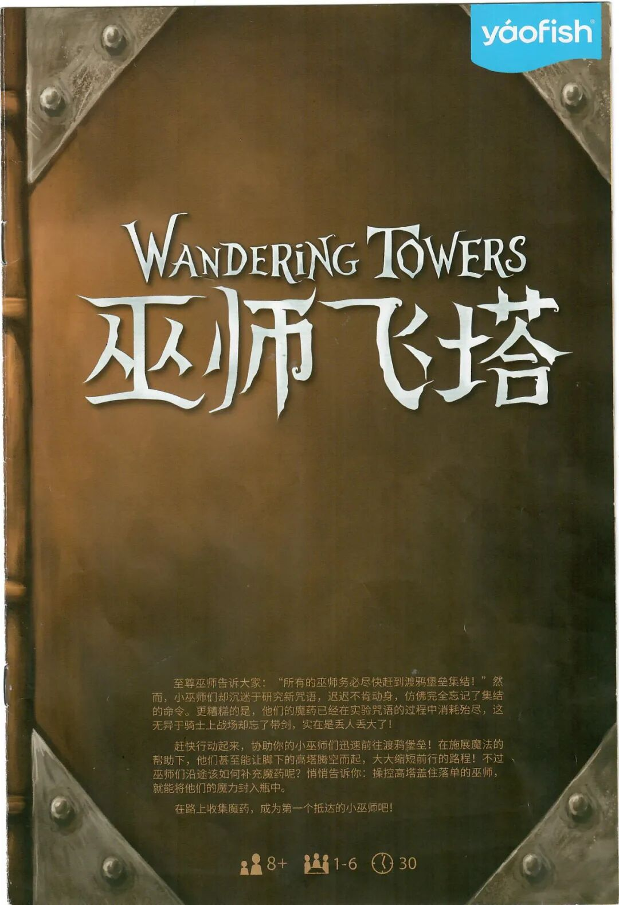
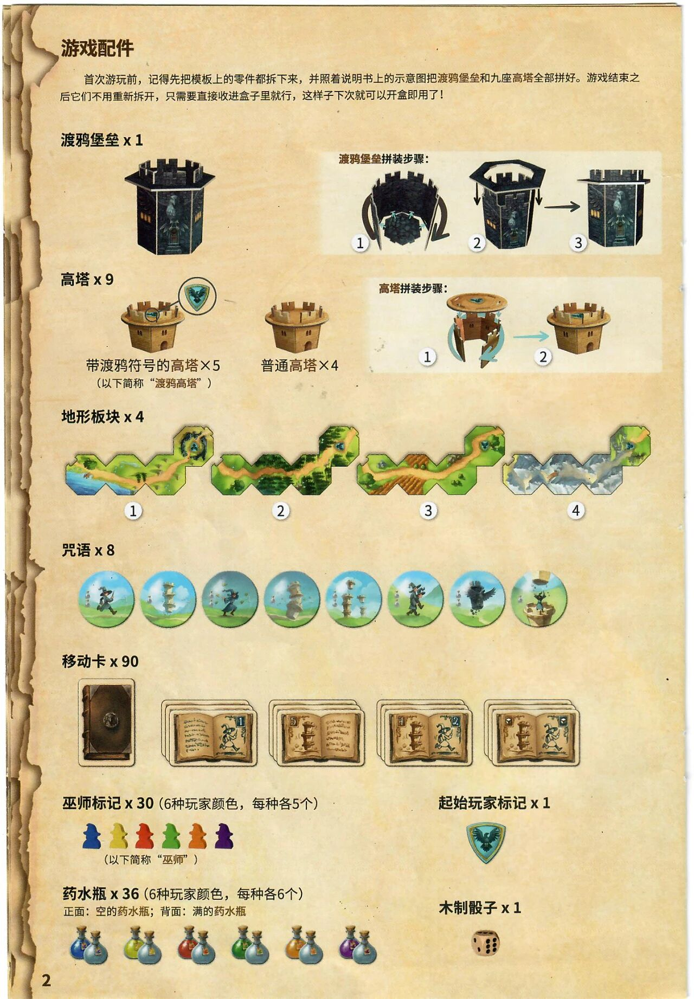
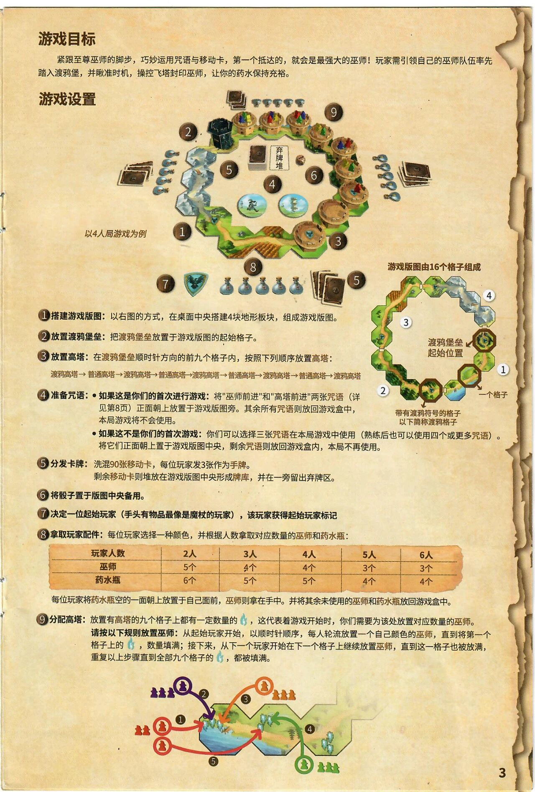
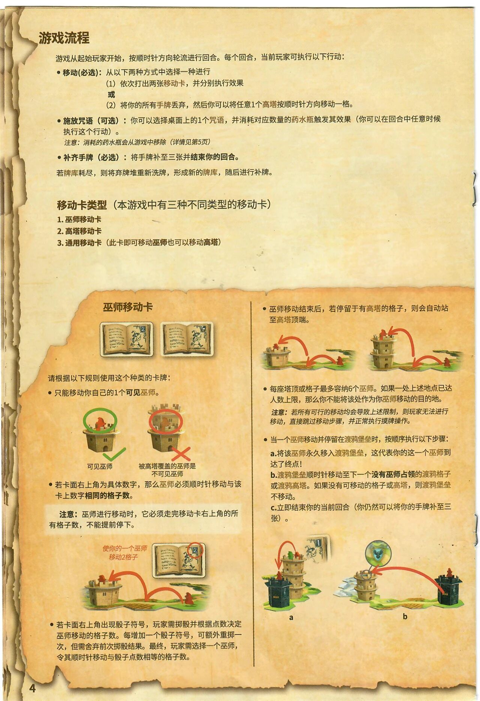
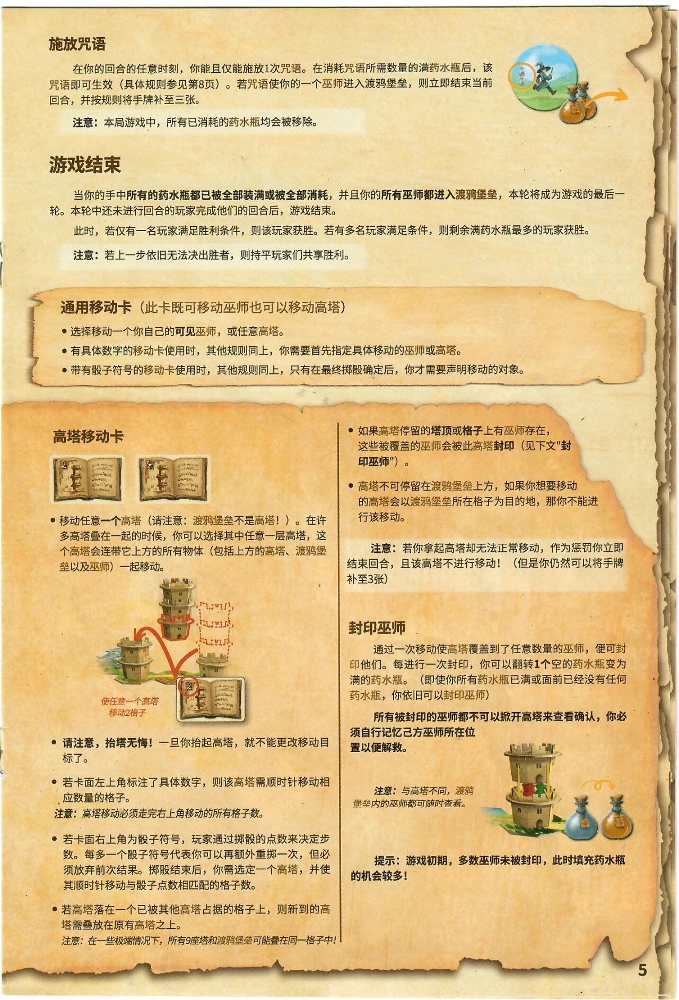
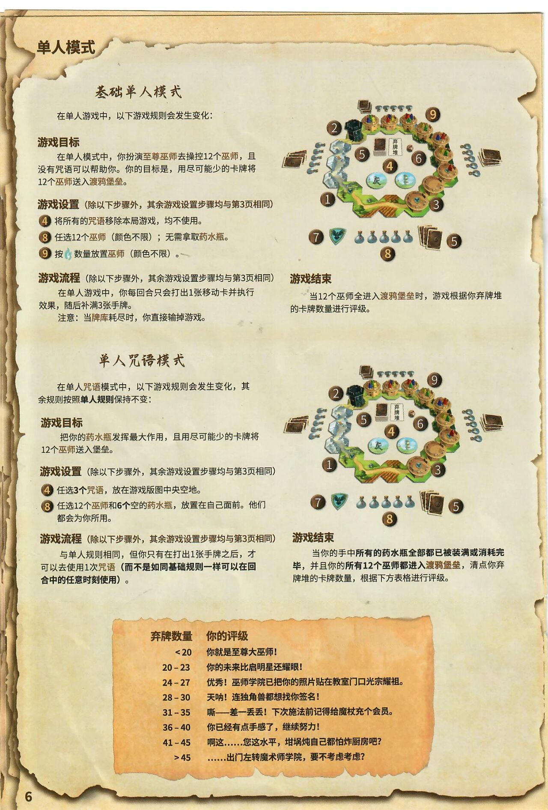
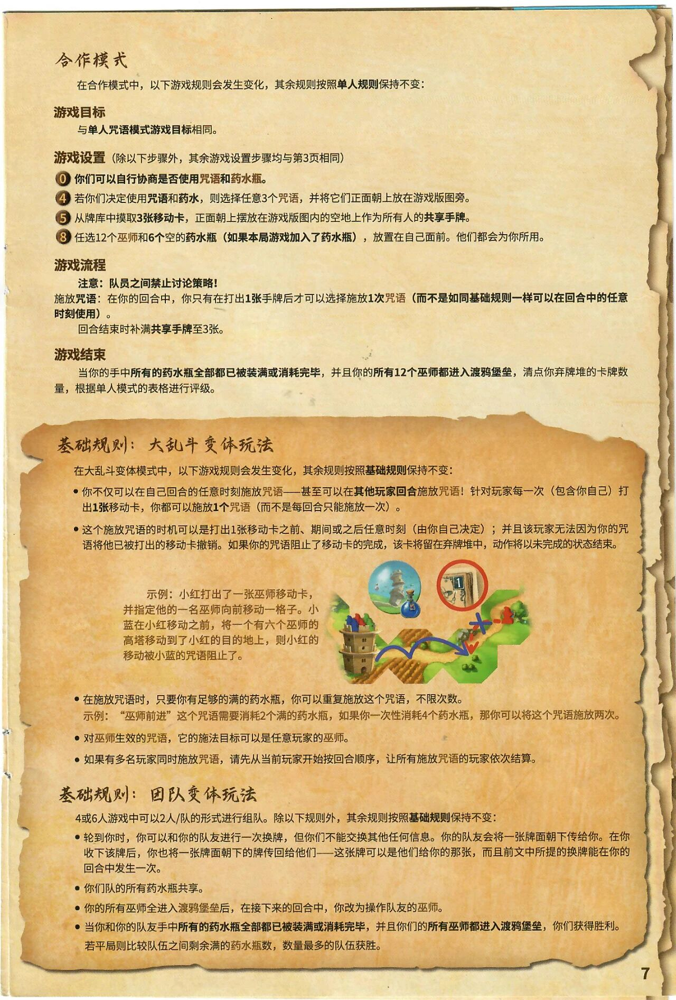
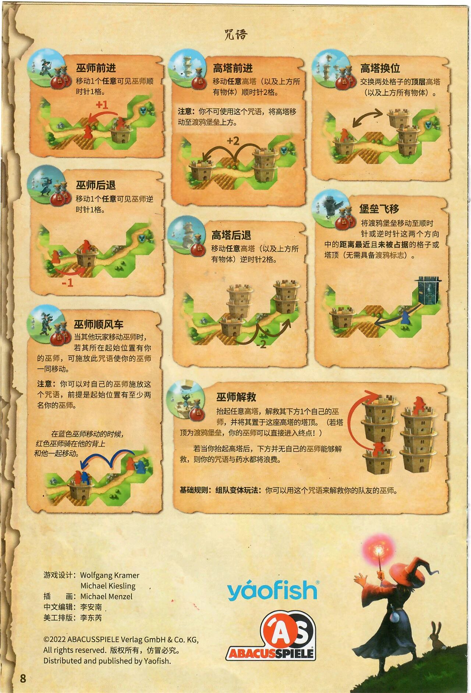

巫师飞塔
Wandering Towers · 官方中文规则书全文转录
本页整理自微信公众号「无忧桌游」《巫师飞塔》发布的《巫师飞塔》(Wandering Towers，Wolfgang Kramer & Michael Kiesling 设计，ABACUSSPIELE 出版，游卡 yaofish 代理发行)官方中文规则书扫描件(8+ / 1–6 人 / 约 30 分钟)。原文同一手册含两套扫描(1080px 与 1280px 各一整套)，本页采用高清套扫描图随文嵌入——点击任意图片即可放大查看，另一套仅作交叉校验。规则内容归 ABACUSSPIELE、游卡及版权方所有，转录仅供个人学习查阅。
整理说明：原书排印不一之处照录——第 4 页「通用移动卡(此卡即可移动巫师…)」与第 5 页「通用移动卡(此卡既可移动巫师…)」印字不一(两批独立扫描转录逐页一致，经放大核实)；第 6 页两处括注「其余游戏设置步骤均与第3页相同」疑为「设置/规则」排印疏漏；合作模式设置步骤圈号原书作⓪④⑤⑧(首步为 0 号)。转录初稿中「渡鸦壁垒」「渡鸦堡堡」多处经与扫描图放大核对均为「渡鸦堡垒」，已径改。〔?〕为扫描件无法辨认之处(封面一处标点，经封底同文比对确认为逗号)。〔图 …〕说明与个别小节标题为整理所拟。

yaofish
WANDERING TOWERS
巫师飞塔
至尊巫师告诉大家:“所有的巫师务必尽快赶到渡鸦堡垒集结!”然而,小巫师们却沉迷于研究新咒语,迟迟不肯动身,仿佛完全忘记了集结的命令。更糟糕的是,他们的魔药已经在实验咒语的过程中消耗殆尽,这无异于骑士上战场却忘了带剑,实在是丢人丢大了!
赶快行动起来,协助你的小巫师们迅速前往渡鸦堡垒!在施展魔法的帮助下,他们甚至能让脚下的高塔腾空而起,大大缩短前行的路程!不过,巫师们沿途该如何补充魔药呢?悄悄告诉你:操控高塔盖住落单的巫师,就能将他们的魔力封入瓶中。
在路上收集魔药,成为第一个抵达的小巫师吧!
8+ 1-6 30
〔无〕

游戏配件
首次游玩前,记得先把模板上的零件都拆下来,并照着说明书上的示意图把渡鸦堡垒和九座高塔全部拼好。游戏结束之后它们不用重新拆开,只需要直接收进盒子里就行,这样子下次就可以开盒即用了!
渡鸦堡垒 x 1
〔插图,无标注文字〕
〔插图〕渡鸦堡垒拼装步骤:1、2、3
高塔 x 9
〔插图,无标注文字〕
带渡鸦符号的高塔×5
(以下简称“渡鸦高塔”)
普通高塔×4
〔插图〕高塔拼装步骤:1、2
地形板块 x 4
〔插图〕1、2、3、4
咒语 x 8
〔插图,无标注文字〕
移动卡 x 90
〔插图〕1、5、4、2
巫师标记 x 30(6种玩家颜色,每种各5个)
〔插图,无标注文字〕
(以下简称“巫师”)
起始玩家标记 x 1
〔插图,无标注文字〕
药水瓶 x 36(6种玩家颜色,每种各6个)
正面:空的药水瓶;背面:满的药水瓶
〔插图,无标注文字〕
木制骰子 x 1
〔插图,无标注文字〕
〔2〕

游戏目标
紧跟至尊巫师的脚步,巧妙运用咒语与移动卡,第一个抵达的,就会是最强大的巫师!玩家需引领自己的巫师队伍率先踏入渡鸦堡,并瞅准时机,操控飞塔封印巫师,让你的药水保持充裕。
游戏设置
〔插图:游戏设置总览〕
以4人局游戏为例
弃牌堆
〔插图:游戏版图示意(右侧小图)〕
游戏版图由16个格子组成
渡鸦堡垒 起始位置
一个格子
带有渡鸦符号的格子 以下简称渡鸦格子
① 搭建游戏版图: 以右图的方式,在桌面中央搭建4块地形板块,组成游戏版图。
② 放置渡鸦堡垒: 把渡鸦堡垒放置于游戏版图的起始格子。
③ 放置高塔: 在渡鸦堡垒顺时针方向的前九个格子内,按照下列顺序放置高塔:
渡鸦高塔 → 普通高塔 → 渡鸦高塔 → 普通高塔 → 渡鸦高塔 → 普通高塔 → 渡鸦高塔 → 普通高塔 → 渡鸦高塔
④ 准备咒语:
- 如果这是你们的首次进行游戏: 将"巫师前进"和"高塔前进"两张咒语(详见第8页)正面朝上放置于游戏版图旁。其余所有咒语则放回游戏盒中,本局游戏将不会使用。
- 如果这不是你们的首次游戏: 你们可以选择三张咒语在本局游戏中使用(熟练后也可以使用四个或更多咒语)。将它们正面朝上置于游戏版图中央,剩余咒语则放回游戏盒内,本局不再使用。
⑤ 分发卡牌: 洗混90张移动卡,每位玩家发3张作为手牌。
剩余移动卡则堆放在游戏版图中央形成牌库,并在一旁留出弃牌区。
⑥ 将骰子置于版图中央备用。
⑦ 决定一位起始玩家(手头有物品最像是魔杖的玩家),该玩家获得起始玩家标记
⑧ 拿取玩家配件: 每位玩家选择一种颜色,并根据人数拿取对应数量的巫师和药水瓶:
| 玩家人数 | 2人 | 3人 | 4人 | 5人 | 6人 |
| 巫师 | 5个 | 4个 | 4个 | 3个 | 3个 |
| 药水瓶 | 6个 | 5个 | 5个 | 4个 | 4个 |
每位玩家将药水瓶空的一面朝上放置于自己面前,巫师则拿在手中。并将其余未使用的巫师和药水瓶放回游戏盒中。
⑨ 分配高塔: 放置有高塔的九个格子上都有一定数量的【药水瓶图标】,这代表着游戏开始时,你们需要为该处放置对应数量的巫师。
请按以下规则放置巫师: 从起始玩家开始,以顺时针顺序,每人轮流放置一个自己颜色的巫师,直到将第一个格子上的【药水瓶图标】,数量填满;接下来,从下一个玩家开始在下一个格子上继续放置巫师,直到这一格子也被放满,重复以上步骤直到全部九个格子的【药水瓶图标】,都被填满。
〔插图:巫师放置顺序示例〕
〔3〕

游戏流程
游戏从起始玩家开始,按顺时针方向轮流进行回合。每个回合,当前玩家可执行以下行动:
- 移动(必选): 从以下两种方式中选择一种进行
(1) 依次打出两张移动卡,并分别执行效果
或
(2) 将你的所有手牌丢弃,然后你可以将任意1个高塔按顺时针方向移动一格。
- 施放咒语(可选): 你可以选择桌面上的1个咒语,并消耗对应数量的药水瓶触发其效果(你可以在回合中任意时候执行这个行动)。
注意: 消耗的药水瓶会从游戏中移除(详情见第5页)
- 补齐手牌(必选): 将手牌补至三张并结束你的回合。
若牌库耗尽,则将弃牌堆重新洗牌,形成新的牌库,随后进行补牌。
移动卡类型(本游戏中有三种不同类型的移动卡)
1. 巫师移动卡
2. 高塔移动卡
3. 通用移动卡 (此卡即可移动巫师也可以移动高塔)
巫师移动卡
〔插图:巫师移动卡示例〕
请根据以下规则使用这个种类的卡牌:
- 只能移动你自己的1个可见巫师。
〔插图:示例〕
可见巫师
被高塔覆盖的巫师是不可见巫师
- 若卡面右上角为具体数字,那么巫师必须顺时针移动与该卡上数字相同的格子数。
注意: 巫师进行移动时,它必须走完移动卡右上角的所有格子数,不能提前停下。
〔插图:示例〕
使你的一个巫师移动2格子
- 若卡面右上角出现骰子符号,玩家需掷骰并根据点数决定巫师移动的格子数。每增加一个骰子符号,可额外重掷一次,但需舍弃前次掷骰结果。最终,玩家需选择一个巫师,令其顺时针移动与骰子点数相等的格子数。
- 巫师移动结束后,若停留于有高塔的格子,则会自动站至高塔顶端。
〔插图:示例〕
- 每座塔顶或格子最多容纳6个巫师。如果一处上述地点已达人数上限,那么你不能将该处作为你巫师移动的目的地。
注意: 若所有可行的移动均会导致上述限制,则玩家无法进行移动,直接跳过移动步骤,并正常执行摸牌操作。
- 当一个巫师移动并停留在渡鸦堡垒时,按顺序执行以下步骤:
a.将该巫师永久移入渡鸦堡垒,这代表你的这一个巫师到达了终点!
b.渡鸦堡垒顺时针移动至下一个没有巫师占领的渡鸦格子或渡鸦高塔。如果没有可移动的格子或高塔,则渡鸦堡垒不移动。
c.立即结束你的当前回合(你仍然可以将你的手牌补至三张)。
〔插图:示例 a、b〕
a
b
〔4〕

施放咒语
在你的回合的任意时刻，你能且仅能施放1次咒语。在消耗咒语所需数量的满药水瓶后，该咒语即可生效（具体规则参见第8页）。若咒语使你的一个巫师进入渡鸦堡垒，则立即结束当前回合，并按规则将手牌补至三张。
〔插图〕
注意： 本局游戏中，所有已消耗的药水瓶均会被移除。
游戏结束
当你的手中所有的药水瓶都已被全部装满或被全部消耗，并且你的所有巫师都进入渡鸦堡垒，本轮将成为游戏的最后一轮。本轮中还未进行回合的玩家完成他们的回合后，游戏结束。
此时，若仅有一名玩家满足胜利条件，则该玩家获胜。若有多名玩家满足条件，则剩余满药水瓶最多的玩家获胜。
注意： 若上一步依旧无法决出胜者，则持平玩家们共享胜利。
通用移动卡（此卡既可移动巫师也可以移动高塔）
- 选择移动一个你自己的可见巫师，或任意高塔。
- 有具体数字的移动卡使用时，其他规则同上，你需要首先指定具体移动的巫师或高塔。
- 带有骰子符号的移动卡使用时，其他规则同上，只有在最终掷骰确定后，你才需要声明移动的对象。
高塔移动卡
〔插图：高塔移动卡示例〕
- 移动任意一个高塔（请注意： 渡鸦堡垒不是高塔！）。在许多高塔叠在一起的时候，你可以选择其中任意一层高塔，这个高塔会连带它上方的所有物体（包括上方的高塔、渡鸦堡垒以及巫师）一起移动。
〔插图：示例〕
使任意一个高塔移动2格子
- 请注意，抬塔无悔！ 一旦你抬起高塔，就不能更改移动目标了。
- 若卡面左上角标注了具体数字，则该高塔需顺时针移动相应数量的格子。
注意： 高塔移动必须走完右上角移动的所有格子数。
- 若卡面右上角为骰子符号，玩家通过掷骰的点数来决定步数。每多一个骰子符号代表你可以再额外重掷一次，但必须放弃前次结果。掷骰结束后，你需选定一个高塔，并使其顺时针移动与骰子点数相匹配的格子数。
- 若高塔落在一个已被其他高塔占据的格子上，则新到的高塔需叠放在原有高塔之上。
注意： 在一些极端情况下，所有9座塔和渡鸦堡垒可能叠在同一格子中！
- 如果高塔停留的塔顶或格子上有巫师存在，这些被覆盖的巫师会由此高塔封印（见下文"封印巫师"）。
- 高塔不可停留在渡鸦堡垒上方，如果你想要移动的高塔会以渡鸦堡垒所在格子为目的地，那你不能进行该移动。
注意： 若你拿起高塔却无法正常移动，作为惩罚你立即结束回合，且该高塔不进行移动！（但是你仍然可以将手牌补至3张）
封印巫师
通过一次移动使高塔覆盖到了任意数量的巫师，便可封印他们。每进行一次封印，你可以翻转1个空的药水瓶变为满的药水瓶。（即使你所有药水瓶已满或面前已经没有任何药水瓶，你依旧可以封印巫师）
所有被封印的巫师都不可以掀开高塔来查看确认，你必须自行记忆己方巫师所在位置以便解救。
〔插图〕
注意： 与高塔不同，渡鸦堡垒内的巫师都可随时查看。
提示：游戏初期，多数巫师未被封印，此时填充药水瓶的机会较多！
〔5〕

单人模式
基础单人模式
在单人游戏中，以下游戏规则会发生变化：
游戏目标
在单人模式中，你扮演至尊巫师去操控12个巫师，且没有咒语可以帮助你。你的目标是，用尽可能少的卡牌将12个巫师送入渡鸦堡垒。
游戏设置（除以下步骤外，其余游戏设置步骤均与第3页相同）
④ 将所有的咒语移除本局游戏，均不使用。
⑧ 任选12个巫师（颜色不限）；无需拿取药水瓶。
⑨ 按〔巫师图示〕数量放置巫师（颜色不限）。
游戏流程（除以下步骤外，其余游戏设置步骤均与第3页相同）
在单人游戏中，你每回合只会打出1张移动卡并执行效果，随后补满3张手牌。
注意： 当牌库耗尽时，你直接输掉游戏。
〔插图：基础单人模式游戏设置总览〕
弃牌堆
1 2 3 4 5 6 7 8 9
游戏结束
当12个巫师全进入渡鸦堡垒时，游戏根据你弃牌堆的卡牌数量进行评级。
单人咒语模式
在单人咒语模式中，以下游戏规则会发生变化，其余规则按照单人规则保持不变：
游戏目标
把你的药水瓶发挥最大作用，且用尽可能少的卡牌将12个巫师送入堡垒。
游戏设置（除以下步骤外，其余游戏设置步骤均与第3页相同）
④ 任选3个咒语，放在游戏版图中央空地。
⑧ 任选12个巫师和6个空的药水瓶，放置在自己面前。他们都会为你所用。
游戏流程（除以下步骤外，其余游戏设置步骤均与第3页相同）
与单人规则相同，但你只有在打出1张手牌之后，才可以去使用1次咒语（而不是如同基础规则一样可以在回合中的任意时刻使用）。
〔插图：单人咒语模式游戏设置总览〕
弃牌堆
1 2 3 4 5 6 7 8 9
游戏结束
当你的手中所有的药水瓶全部都已被装满或消耗完毕，并且你的所有12个巫师都进入渡鸦堡垒，清点你弃牌堆的卡牌数量，根据下方表格进行评级。
| 弃牌数量 | 你的评级 |
| < 20 | 你就是至尊大巫师！ |
| 20 – 23 | 你的未来比启明星还耀眼！ |
| 24 – 27 | 优秀！巫师学院已把你的照片贴在教室门口光宗耀祖。 |
| 28 – 30 | 天呐！连独角兽都想找你签名！ |
| 31 – 35 | 嘶——差一丢丢！下次施法前记得给魔杖充个会员。 |
| 36 – 40 | 你已经有点手感了，继续努力！ |
| 41 – 45 | 啊这……您这水平，坩埚炖自己都怕炸厨房吧？ |
| > 45 | ……出门左转魔术师学院，要不考虑考虑？ |
〔6〕

合作模式
在合作模式中，以下游戏规则会发生变化，其余规则按照单人规则保持不变：
游戏目标
与单人咒语模式游戏目标相同。
游戏设置（除以下步骤外，其余游戏设置步骤均与第3页相同）
⓪ 你们可以自行协商是否使用咒语和药水瓶。
④ 若你们决定使用咒语和药水，则选择任意3个咒语，并将它们正面朝上放在游戏版图旁。
⑤ 从牌库中摸取3张移动卡，正面朝上摆放在游戏版图内的空地上作为所有人的共享手牌。
⑧ 任选12个巫师和6个空的药水瓶（如果本局游戏加入了药水瓶），放置在自己面前。他们都会为你所用。
游戏流程
注意：队员之间禁止讨论策略！
施放咒语：在你的回合中，你只有在打出1张手牌后才可以选择施放1次咒语（而不是如同基础规则一样可以在回合中的任意时刻使用）。
回合结束时补满共享手牌至3张。
游戏结束
当你的手中所有的药水瓶全部都已被装满或消耗完毕，并且你的所有12个巫师都进入渡鸦堡垒，清点你弃牌堆的卡牌数量，根据单人模式的表格进行评级。
基础规则：大乱斗变体玩法
在大乱斗变体模式中，以下游戏规则会发生变化，其余规则按照基础规则保持不变：
- 你不仅可以在自己回合的任意时刻施放咒语——甚至可以在其他玩家回合施放咒语！针对玩家每一次（包含你自己）打出1张移动卡，你都可以施放1个咒语（而不是每回合只能施放一次）。
- 这个施放咒语的时机可以是打出1张移动卡之前、期间或之后任意时刻（由你自己决定）；并且该玩家无法因为你的咒语将他已被打出的移动卡撤销。如果你的咒语阻止了移动卡的完成，该卡将留在弃牌堆中，动作将以未完成的状态结束。
示例：小红打出了一张巫师移动卡，并指定他的一名巫师向前移动一格子。小蓝在小红移动之前，将一个有六个巫师的高塔移动到了小红的目的地上，则小红的移动被小蓝的咒语阻止了。
- 在施放咒语时，只要你有足够的满的药水瓶，你可以重复施放这个咒语，不限次数。
示例：“巫师前进”这个咒语需要消耗2个满的药水瓶，如果你一次性消耗4个药水瓶，那你可以将这个咒语施放两次。
- 对巫师生效的咒语，它的施法目标可以是任意玩家的巫师。
- 如果有多名玩家同时施放咒语，请先从当前玩家开始按回合顺序，让所有施放咒语的玩家依次结算。
基础规则：团队变体玩法
4或6人游戏中可以2人/队的形式进行组队。除以下规则外，其余规则按照基础规则保持不变：
- 轮到你时，你可以和你的队友进行一次换牌，但他们不能交换其他任何信息。你的队友会将一张牌面朝下传给你。在你收下该牌后，你也将一张牌面朝下的牌传回给他们——这张牌可以是他们给你的那张，而且前文中所提的换牌能在你的回合中发生一次。
- 你们队的所有药水瓶共享。
- 你的所有巫师全进入渡鸦堡垒后，在接下来的回合中，你改为操作队友的巫师。
- 当你和你的队友手中所有的药水瓶全部都已被装满或消耗完毕，并且你们的所有巫师都进入渡鸦堡垒，你们获得胜利。
若平局则比较队伍之间剩余满的药水瓶数，数量最多的队伍获胜。
〔7〕

咒语
巫师前进
移动1个任意可见巫师顺时针1格。
+1
高塔前进
移动任意高塔（以及上方所有物体）顺时针2格。
注意：你不可使用这个咒语，将高塔移动至渡鸦堡垒上方。
+2
高塔换位
交换两处格子的顶层高塔（以及上方所有物体）。
巫师后退
移动1个任意可见巫师逆时针1格。
-1
高塔后退
移动任意高塔（以及上方所有物体）逆时针2格。
-2
堡垒飞移
将渡鸦堡垒移动至顺时针或逆时针这两个方向中的距离最近且未被占据的格子或塔顶（无需具备渡鸦标志）。
巫师顺风车
当其他玩家移动巫师时，若其所在起始位置有你的巫师，可施放此咒语使你的巫师一同移动。
注意：你可以对自己的巫师施放这个咒语，前提是起始位置有至少两名你的巫师。
在蓝色巫师移动的时候，红色巫师骑在他的背上和他一起移动。
巫师解救
拾起任意高塔，解救其下方1个自己的巫师，并将其置于这座高塔的塔顶。（若塔顶为渡鸦堡垒，你的巫师可以直接进入终点！）
若当你拾起高塔后，下方并无自己的巫师能够解救，则你的咒语与药水都将浪费。
基础规则：组队变体玩法：你可以用这个咒语来解救你的队友的巫师。
游戏设计：Wolfgang Kramer
Michael Kiesling
插 画：Michael Menzel
中文编辑：李安南
美工排版：李东芮
©2022 ABACUSSPIELE Verlag GmbH & Co. KG,
All rights reserved. 版权所有，仿冒必究。
Distributed and published by Yaofish.
〔8〕
WANDERING TOWERS
巫师飞塔
至尊巫师告诉大家:“所有的巫师务必尽快赶到渡鸦堡垒集结!”然而,小巫师们却沉迷于研究新咒语,迟迟不肯动身,仿佛完全忘记了集结的命令。更糟糕的是,他们的魔药已经在实验咒语的过程中消耗殆尽,这无异于骑士上战场却忘了带剑,实在是丢人丢大了!
赶快行动起来,协助你的小巫师们迅速前往渡鸦堡垒!在施展魔法的帮助下,他们甚至能让脚下的高塔腾空而起,大大缩短前行的路程!不过,巫师们沿途该如何补充魔药呢?悄悄告诉你:操控高塔盖住落单的巫师,就能将他们的魔力封入瓶中。
在路上收集魔药,成为第一个抵达的小巫师吧!
〔插图〕8+ 1-6 30
〔无〕